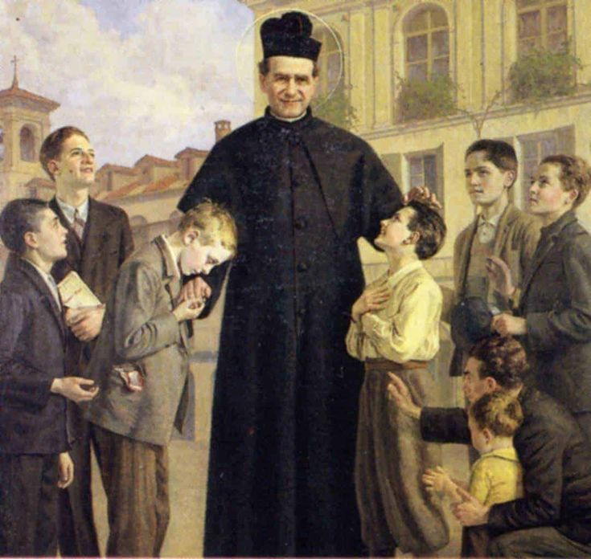
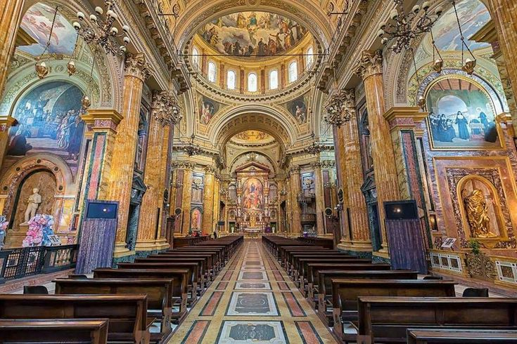

Propósito
Fomentar o desenvolvimento humano, cristão e profissional de adolescentes e jovens.
Fundada em 1948, é uma das Unidades de Assistência Social da Inspetoria Salesiana do Nordeste do Brasil. Atua em três frentes: Programa Jovem Aprendiz, Cursos Profissionalizantes e CTG (Centro de Treinamentos).
Fomentar o desenvolvimento humano, cristão e profissional de adolescentes e jovens.
Educação baseada em razão, religião e amorevolezza (amor educativo), legado de Dom Bosco.
Qualificação técnica, cidadania ativa, colaboração, responsabilidade e solidariedade.
Parceiros: empresas do Programa de Aprendizagem, Instituto Coca-Cola, Plan Internacional e Ministério do Trabalho e Emprego em Pernambuco.
A Rede Salesiana Brasil reúne Salesianos de Dom Bosco, Filhas de Maria Auxiliadora e colaboradores em todo o país. É a maior rede de educação católica do mundo, com cerca de 100 escolas, mais de 100 obras sociais e 15 centros universitários, além de editora, rádios e museus.
Conheça a RSBFonte: escoladombosco.org.br. Turmas, editais e faixas etárias podem mudar; confirme nos canais oficiais.
Plataforma de cursos online gratuitos da Fundação Bradesco. Escolha o curso, faça o cadastro no site e estude no seu ritmo.
Acessar ev.org.br → MEC • CURSOS GRATUITOSMatéria do Educa Mais Brasil que reúne cursos gratuitos oferecidos pelo MEC, com certificado online.
Ler a matéria →Estes cursos são de responsabilidade das instituições que os oferecem. A inscrição é feita diretamente nos sites indicados.
Monte seu currículo (você pode usar o CareerIA) e some certificados de cursos gratuitos.
Confira os requisitos no Conect RH e veja o que combina com você.
Cadastre-se e envie sua candidatura direto no site oficial.
Este site não coleta candidaturas nem dados pessoais. Cada processo seletivo é conduzido pelo site de origem, onde o status das vagas é atualizado.
Ferramenta pensada para estudantes, jovens profissionais e candidatos a estágio ou primeiro emprego organizarem sua jornada profissional, do currículo às candidaturas.
O CareerIA é um projeto independente do autor deste site e não é uma ferramenta oficial da Escola Dom Bosco nem da Rede Salesiana. Veja como tratamos dados na Política de Privacidade.


Imagens meramente ilustrativas, de domínio público. Veja o arquivo imagens/LEIA-ME.txt para adicionar as imagens reais.
João Bosco nasce em Castelnuovo d'Asti, no Piemonte, Itália.
Ordenado padre em Turim, dedica-se aos jovens que viviam nas ruas e nas prisões da cidade industrial.
Cria o Oratório, onde os meninos aprendem um ofício, brincam e são acolhidos. Sua proposta: "prevenir e não reprimir".
Funda a Sociedade de São Francisco de Sales, que leva sua missão a novos lugares.
Chegam a Niterói (RJ) e inauguram o Colégio Santa Rosa, primeira casa salesiana do país.
Dom Bosco falece em Turim em 1888 e é canonizado em 1934. Seu Sistema Preventivo segue como base da educação salesiana.
Faça um curso, fortaleça o currículo e candidate-se às vagas.